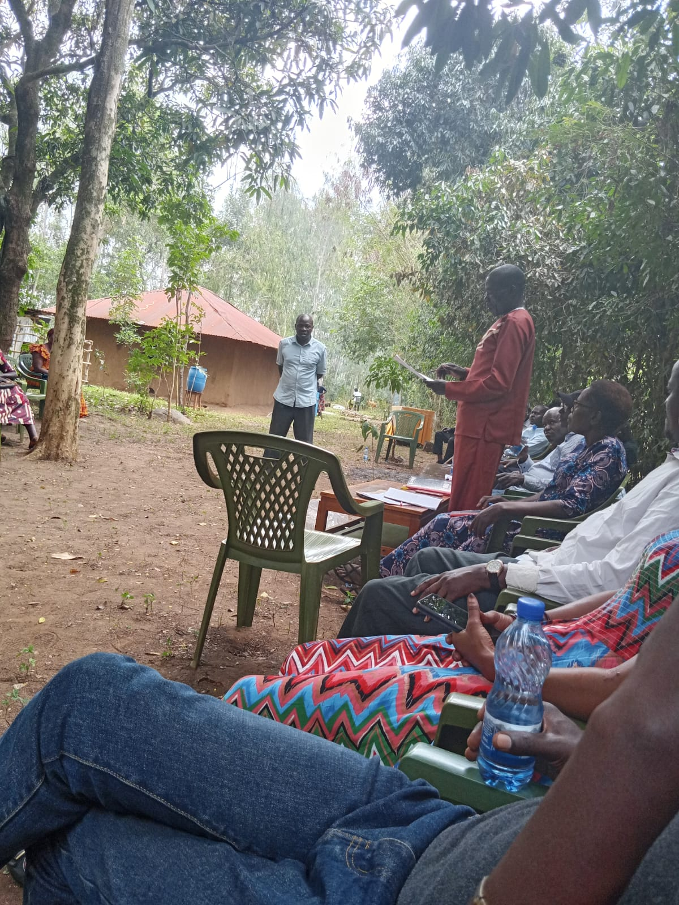
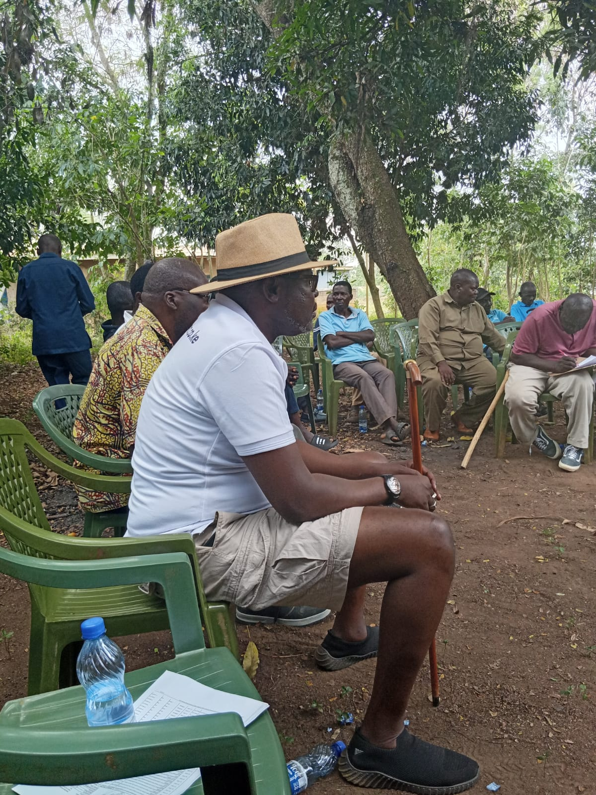
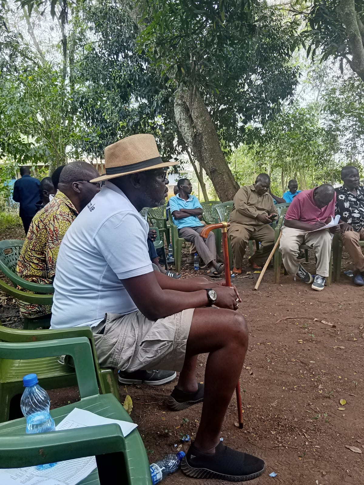
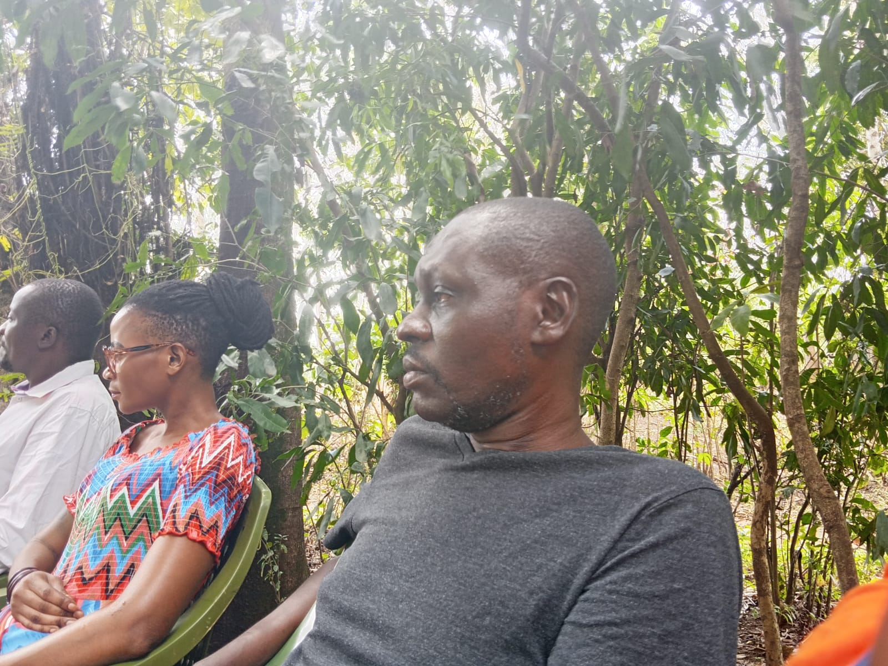

Community engagement video 1
Recorded 22 August 2026 · location and speaker context to be confirmed.
Campaign media
Current and earlier supplied campaign photographs and videos, presented with cautious captions where event metadata remains incomplete.
Latest on the ground · 22 August 2026
The newest supplied photographs and recordings from a community gathering. These materials are presented as evidence of engagement; attendance does not imply political endorsement.










Recorded 22 August 2026 · location and speaker context to be confirmed.
Recorded 22 August 2026 · location and speaker context to be confirmed.
Recorded 22 August 2026 · location and speaker context to be confirmed.


The campaign should confirm photographer credits and publication permissions before reuse.